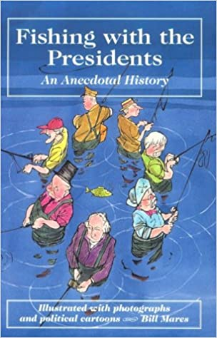
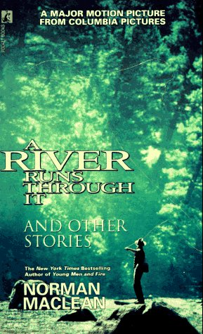

コラム
THE LURE OF FISHING calendar 2011 の名言の数々
昨年の引っ越しの時、片付けをしていたら、捨てるには忍びなくてとっておいた昔の釣りのカレンダーがたくさん出てきた。その中の、THE LURE OF FISHING calendar 2011：釣りの誘惑 には、一月に一つ、計十二の釣りに関する名言が載っていた。そこで、カレンダーの出版社に、自分のウェブサイトへの転載許可をもらえますでしょうか？とメールしたところ、しばらくたって忘れた頃に、編集アシスタントのレイチェルさんという人が返事をくれた。
セラーズ出版にご連絡いただきありがとうございます。釣りカレンダーをお楽しみいただけたとのことで嬉しく思います。私たちは喜んであなたのウェブサイトで引用するための許可を与えます。グッドラック、そして幸せな釣りを！
Sellers Publishing, Inc.
161 John Roberts Road, South Portland, ME 04106
以下に、カレンダー裏面の解説文、そして十二の名言を拙訳とともに紹介させていただく。
THE LURE OF FISHING ： 釣りの誘惑
北米の最も美しいフィッシングスポットの写真に目を奪われたあなたも、オフィスのドアに「Gone Fishing」と書いたサインボードをオフィスのドアに掛けて、ハイ・カントリーへと向かってみたくなるかもしれません。
このカレンダーには、釣りの喜びをとらえた写真が掲載されており、釣りというものが、単に魚を捕らえる行為にとどまるものではない....ということを理解している人々、有名な作家や政治家、釣り好きな人たちの名言が添えられています。
十二の名言 copyright © 2010 Sellers Publishing, Inc.
"No angler watches nature in a passive way. He enters into its very existence."
どんなアングラーも、自然というものを受動的に見ることはない。釣り人は、自然の存在そのものへと入って行くのだ。
John Bailey
ジョン・ベイリー
イギリスのアングラー、フィッシングガイド。フライフィッシング、コースフィッシングに関して、多数の著書がある。この名言は、
"Fishing is a discipline in the equality of men ? for all men are equal before fish."
人間の平等性について考える時、釣りは一つの行動規範となる。魚の前では、すべての人間は平等だからだ。
Herbert Hoover
ハーバート・フーバー （ウィキペディア日本語版 記事へ）
第31代アメリカ大統領、少年時代から釣りを始め、各地での鱒釣り、海でのボーンフィッシュやカジキ釣りなどを楽しんだ無類の釣り好きとして知られている。彼の在職期間を通じて、釣りが職務上の極度のストレスを癒やしてくれたといわれている。

ちなみに第39代大統領の ジミー・カーター氏（ウィキペディア日本語版）も、フライフィッシャーマンとして有名であり、1981年に訪日した際は、箱根に宿泊した翌日、山梨県南都留郡忍野村の桂川でフライフィッシングを楽しんだ。出典：忍野村観光情報ウェブサイト
大統領職を退いた後の 1982年には Fly Fisherman 誌に "Spruce Creek Diary." という紀行文を寄稿している。この一編は、「鱒釣り」 朔風社刊、杉山透氏編 に柳田ゑみ氏の訳で収録されている。
また、同書に収められた、アーノルド・ギングリッチ氏による「釣れぬ日の慰め」には、ハーバート・フーバー大統領が語ったという、
「釣りは愉しみのため、魂の洗濯のため」
という名句が紹介されている。
"A lake carries you into recesses of feeling otherwise impenetrable."
湖は、ほかの方法では入り込むことのできない、感情の奥底深くへとあなたを運んでくれる。
William Wordsworth
ウィリアム・ワーズワース ウィキペディア日本語版 記事へ
1770-1850 イギリスの代表的なロマン派詩人。湖水地方に住み自然や湖をこよなく愛し、詩にうたった。
"Rivers and the inhabitants of the watery elements are made for wise men to contemplate."
川や、水のある所に棲む無数の生きものは、智慧ある者たちが黙考するために創造されている。
Izaac Walton
アイザック・ウォルトン ウィキペディア日本語版 記事へ
1593?1683 イギリスの作家、彼が1653に書いた ”The Compleat Angler 釣魚大全” で世界的に有名である。この本は現在まで幾度となく版を重ね、日本でも大勢の訳者による翻訳本が出ている。ウォルトンは釣聖と称される。別のウォルトンの名言「Study to be quiet」（原典は新約聖書：テサロニケ人への手紙、 iv 11）を開高健氏は、「穏やかなることを学べ」と訳して、しばしば言及している。
"The angler forgets most of the fish he catches, but he does not forget the streams and lakes in which they are caught."
釣り人は釣り上げる魚のことをほとんど忘れてしまうけれど、魚たちを釣り上げた川や湖のことは忘れない。
Charles K. Fox
チャールズ・K・フォックス
1908-1997 アメリカの作家、フライフィッシャーマン、ルアーコレクター、自然保護主義者、歴史家として知られる。1940年代に「キャッチ・アンド・リリース」フィッシングのコンセプトをペンシルベニア州レトートの地で開拓した。地元、Pennsylvania Angler誌の編集者を務めた。）
The Catskill Fly Fishing Center and Museum 関連記事
"Many go fishing all of their lives without knowing that it is not fish they are after."
多くの人々は、生涯のすべてを釣りに捧げても、自分の追い求めていたものが魚ではなかったことに気づかない。
Henry David Thoreau
ヘンリー・デイビッド・ソロー ウィキペディア日本語版 記事へ
1817-1862 アメリカの作家、思想家、詩人、博物学者。代表作『ウォールデン 森の生活』（1854年刊行）は、ウォールデン池畔の森における自給自足の丸太小屋生活における記録をまとめたもので、そこに著された思想は、後の時代の政治指導者や改革者、モハンダス・ガンジー、ジョン・F・ケネディ米大統領、公民権運動家マーティン・ルーサー・キング・ジュニア、ウィリアム・O・ダグラス米最高裁判事、ロシアの作家レオ・トルストイ、また、マルセル・プルースト、ウィリアム・バトラー・イェーツ、アーネスト・ヘミングウェイ、フランク・ロイド・ライトなど、多くの芸術家や作家にも大きな影響を与えた。
"The charm of fishing is that it is the pursuit of that which is elusive but attainable, a perpetual series of occasions for hope."
釣りの魅力は、つかみどころがないが、達成可能なものを追い求めることにある。それは希望を抱くことができる、永遠に続くチャンスなのである。
ANONYMOUS（作者不詳）
"More than half the intense enjoyment of fly-fishing is derived from the beautiful surroundings, the satisfaction felt from being in the open air ..."
フライフィッシングの醍醐味の半分以上は、釣り場の美しい環境と、野外にいることで感じる満足感から得られるものである...
Charles F. Orvis
チャールズ・F・オービス ウィキペディア英語版 記事へ
1831-1915 アメリカのフライフィッシングタックルメーカー、オービス社の創業者。1856年、バーモント州マンチェスターにオービス社を設立した。彼が1874年に世に出したフライリールは、リールに関する歴史家のジム・ブラウンによって「アメリカのリールデザインの基準」とされ、最初の完全に近代的なフライリールとされている。
オービス社のバンブーロッドとチャールズ・F・オービスについて：公式サイト
"... the air above him was singing with the loops of line that never touched the water."
...彼の頭上の空気は、静かに歌を口ずさんでいた。けっして水に触れることのないフライラインのループとともに。
Norman Maclean
ノーマン・マクリーン ウィキペディア日本語版 記事へ
1902?1990 アメリカの作家・学者、著書の『A River Runs Through It and Other Stories』（1976年）・邦題「マクリーンの川」や『Young Men and Fire』（1992年）で知られる。「マクリーンの川」は絶賛を博してベストセラーになり、1977年のピューリッツァー賞にノミネートされたが、受賞はかなわなかった。そして1992年、ロバート・レッドフォード監督、クレイグ・シェファー、ブラッド・ピット主演で映画化され、アカデミー撮影賞などの賞を獲得した。この映画はフライフィッシングの世界的な流行の引き金となった。
映画：A River Runs Through It
IMDB インターナショナル・ムービーデータベース 記事へ

英語版ペーパーバック 初版本表紙 画像引用：アマゾンより
"Smooth runs the water where the brokk is deep."
小川の深きところ、水はなめらかに流るる。
William Shakespeare
ウィリアム・シェイクスピア ウィキペディア日本語版 記事へ
1564－1616 英国の劇作家・詩人。四大悲劇『ハムレット』『マクベス』『オセロ』『リア王』をはじめ、『ロミオとジュリエット』『ヴェニスの商人』『夏の夜の夢』『ジュリアス・シーザー』など多くの傑作を残した。
"Fishing consists of a series of misadventures interspersed by occasional moments of glory."
釣りは、ごくまれに訪れる歓喜の瞬間がちりばめられた、不運な出来事の連続から成り立っている。
Howard Marshall
ハワード・マーシャル ウィキペディア英語版 記事へ
1900?1973 イギリスのラジオ番組の実況放送、コメンテーターの先駆け、TVキャスター。特に1930年代におけるクリケットのテストマッチのBBCラジオ中継でよく知られている。第二次世界大戦中、連合軍がノルマンディーに上陸した直後に、激戦が繰り広げられる海岸から放送したことでも有名。
この名言は1967年に刊行された「Reflections on a River」という著作より。
画像は Coch-y-Bonddu Books のウェブサイトより引用
"There is no music like a river's ..."
川の流れが奏でる調べに比する音楽は無い.....
Robert Louis Stevenson
ロバート・ルイス・スティーブンソン ウィキペディア日本語版 記事へ
1850-1894 イギリスの小説家、詩人、エッセイスト。物語の面白さを重視し，空想性豊かな寓意的作品を残した。代表作に「宝島」「新・アラビアンナイト」「ジキル博士とハイド氏」などがある。
あらためて読み直すと、深く感じ入る名言ばかりであった。また調べ事のさなかに、いかに自分が一般常識について無知であるかを思い知らされた。（泣）
この記事を書くにあたっては、ウィキペディア英語版、日本語版、各国のアマゾン、及びほかの多数のサイトを参考にさせて頂いた。
後日談：アイザック・ウォルトンついて調べていたら、上記の名言には続きがあり、完全なバージョンとしては以下のようであることが判った。
"Rivers and the inhabitants of the watery elements are made for wise men to contemplate and for fools to pass by without consideration."
川や、水のある所に棲む無数の生きものは、智慧ある者たちが黙考するために創造されている。そして、じっくりと考えることなく水辺から歩み去る愚か者たちのためにも。
Izaac Walton
コラム 目次へ
サイトマップ
ホームへ
お問い合わせ